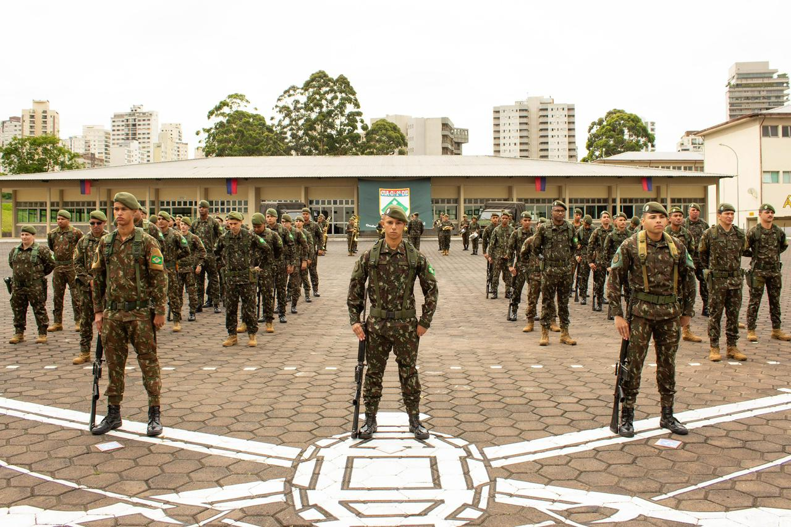
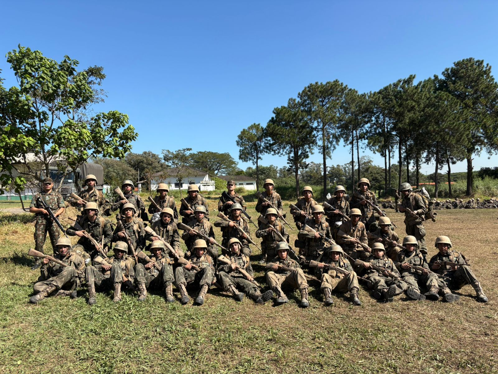

A disciplina adquirida no Exército Brasileiro forma indivíduos mais responsáveis, organizados e determinados. Ela ensina a agir com respeito, cumprir deveres e manter o foco mesmo diante de desafios, tornando-se um valor essencial para a vida pessoal e profissional.
No Exército, surgem oportunidades que vão além do serviço militar. Para muitos jovens que realizam o alistamento obrigatório, essa experiência representa o início de uma nova trajetória. Dentro do quartel, é possível desenvolver disciplina, adquirir conhecimento e construir as bases de um plano de vida sólido. Mais do que uma obrigação, o serviço militar pode ser o primeiro passo para um futuro com propósito, estabilidade e crescimento pessoal.


No Exército, construímos algumas das amizades mais verdadeiras em nossas vidas. É nesse ambiente que surgem companheiros que, ao longo de um período intenso, enfrentam juntos fome, frio, sede e cansaço extremo. Diante de tantos desafios, cada um aprende a apoiar o outro e trabalhar juntos para não desistir.